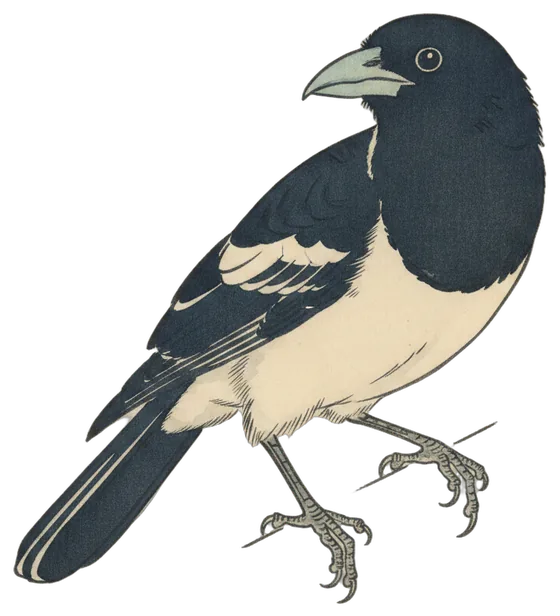

Lead story
Pied Butcherbird brings the magic flute to Friday's chorus
Two calls from a Pied Butcherbird, a Sulphur-crested Cockatoo at dusk and twelve species across 24 hours make up edition 58 of The Dawn Chorus.

The Pied Butcherbird sang twice in the 24 hours to 9:30 pm, first at 6:59 am and again at 7:42 am. The first call came 39 minutes after sunrise. It has been heard on 31 of the 58 days the station has been listening, and it lives in the Canberra region year-round.
The bird's song has been described as a "magic flute", and it is considered the most accomplished songbird in Australia. Two calls is not much flute, but it was enough to carry the morning.
Elsewhere in the day's tally the Pied Butcherbird sat near the bottom of the list, its two calls matched by the Red Wattlebird and edged by the single calls of the Eurasian Coot and Sulphur-crested Cockatoo. The Eurasian Blackbird led the count with 56 calls, ahead of the Pacific Koel on 44.
- Calls
- 2
- First heard
- 6:59 am
- Best call
- 76%
- Days heard
- 31 of 58